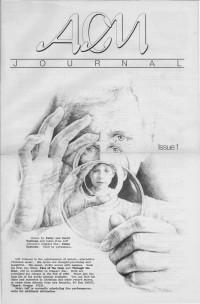

ACM Journal, 1989
| Cover |
|---|
|  |
#1
Article:- "Flevo, Holland"
- "Listings of Records by Genre"
- "ACMinistries"descriptions of various Christian organizations
This is the first issue of ACM Journal.
| Cover |
|---|
 |
| Writers in this Issue |
| Vargas, Lionel |
#2
Article:- "Obituary [Debbie Nelson]"Undercover (Debbie Nelson, wife of Gym Nicholson)
- Reneé García by Lionel Vargas
- The Choir - Wide-Eyed Wonder Videos
© 2011 CMnexus. Last updated December 2020. Contact: editor -AT- cmnexus -DØT- org About